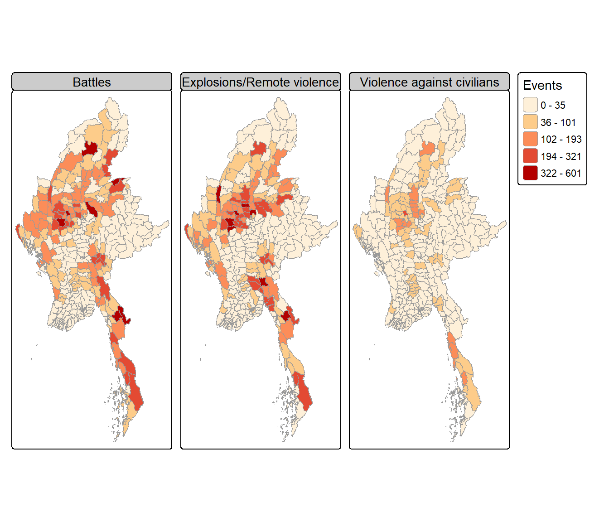
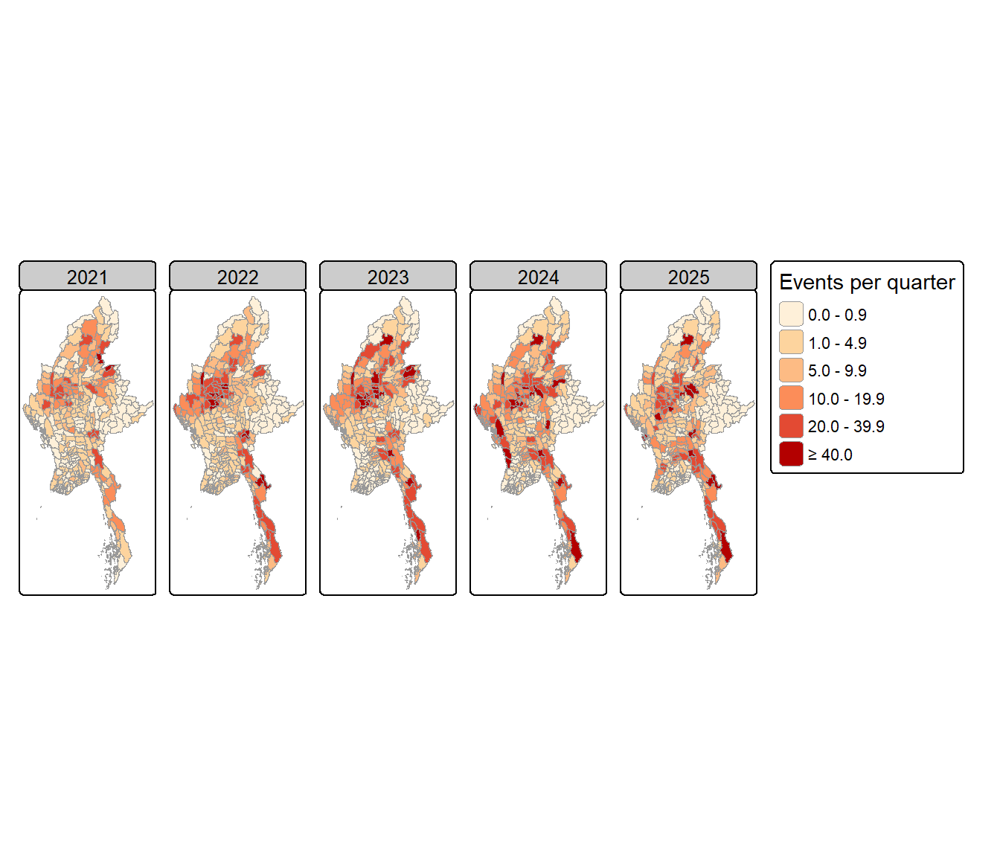
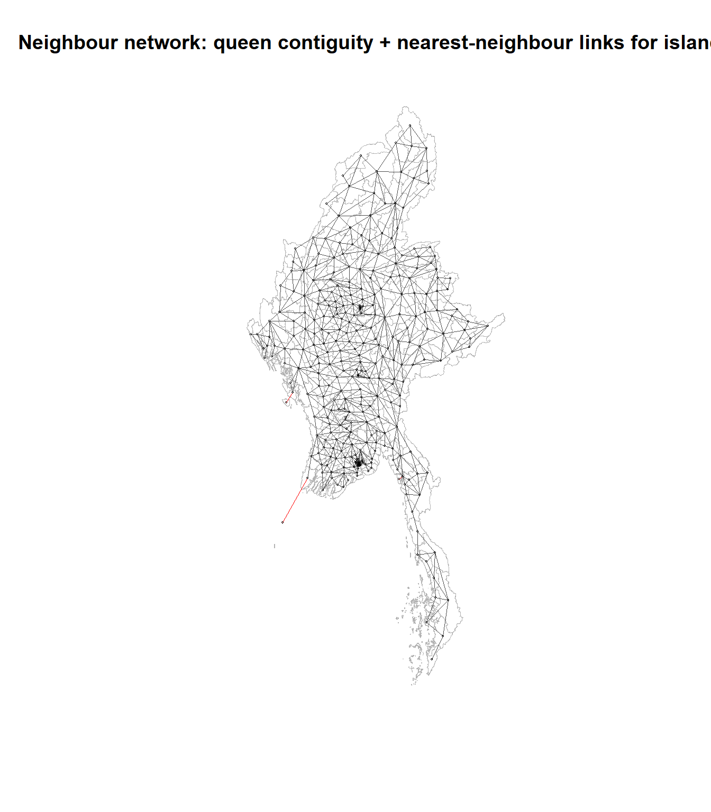
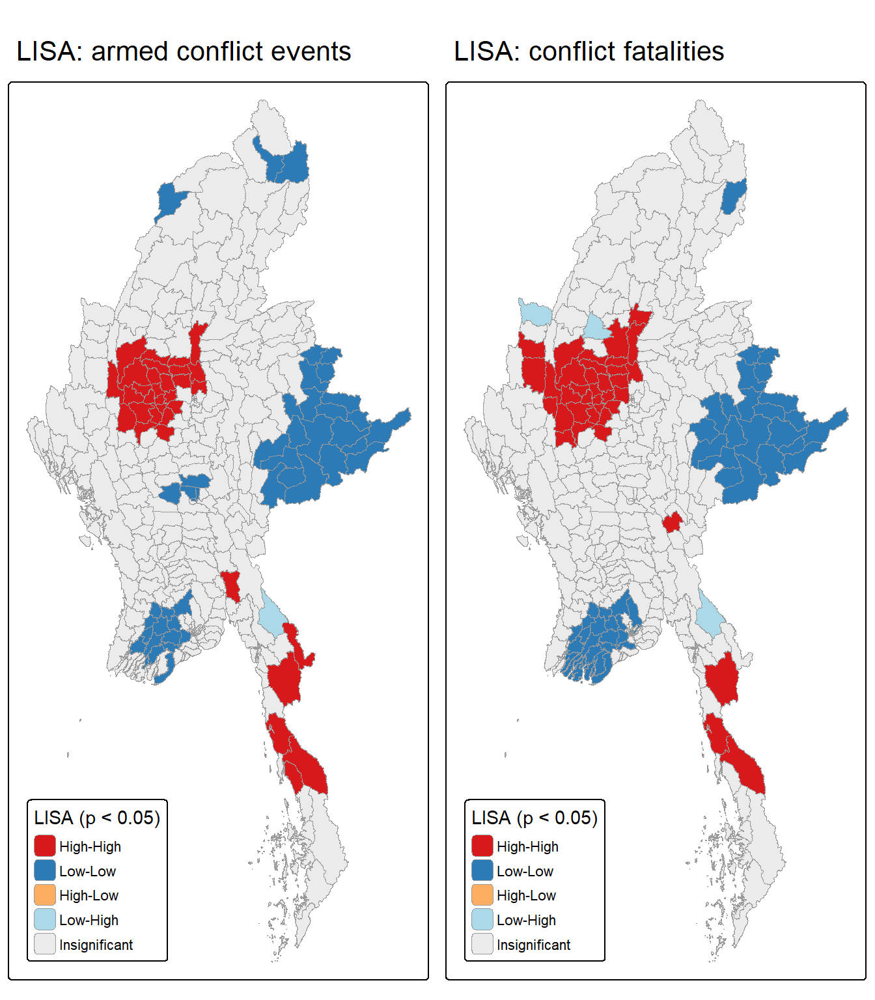
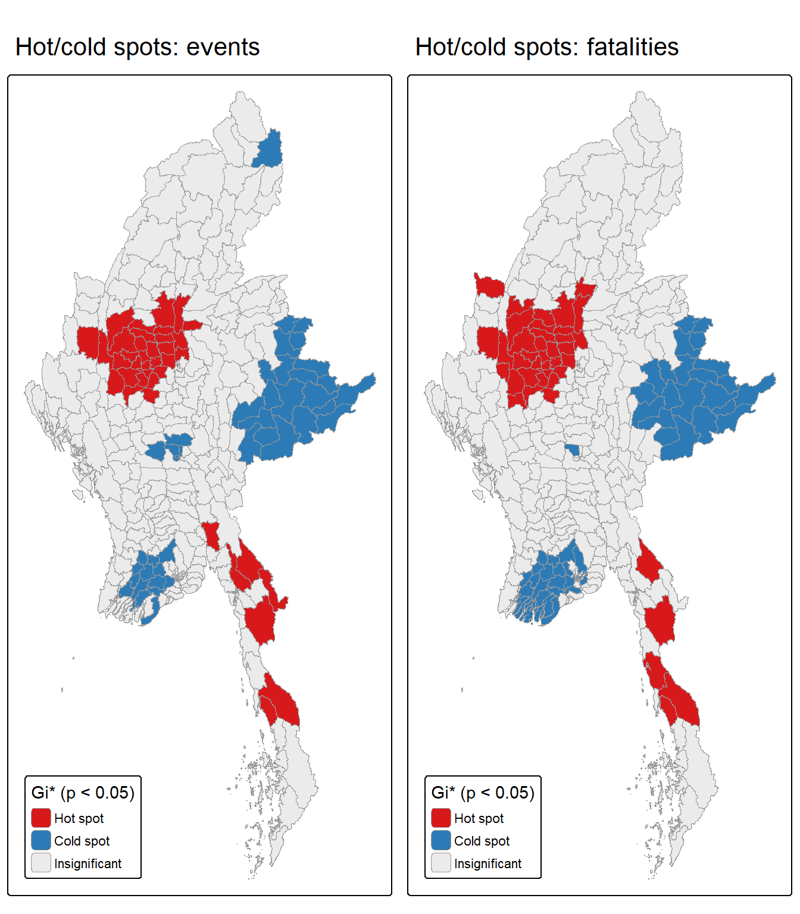
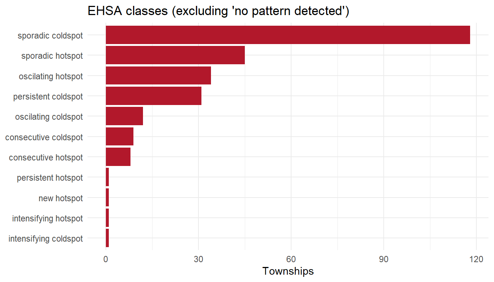
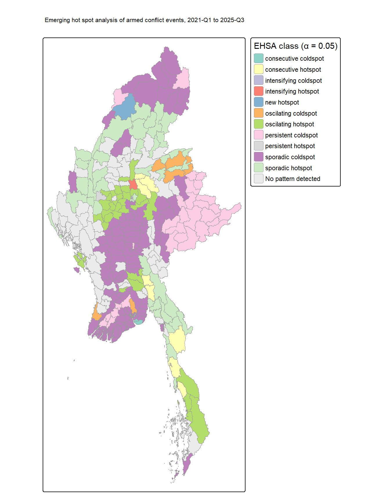

Code
pacman::p_load(sf, sfdep, spdep, tmap, tidyverse, lubridate,
Kendall, knitr, DT, plotly)
set.seed(1234) # all permutation tests below are reproducibleWhere, and how, is armed conflict clustering and evolving across Myanmar’s townships? (Jan 2021 – Sep 2025)
Myanmar has been in armed conflict since independence in 1948. The February 2021 military coup turned a long-running set of ethnic insurgencies into a nationwide civil war. Thousands of people have been killed and more than three million displaced, and large parts of the country have slipped out of the junta’s control.
This report uses township-level spatial and spatio-temporal statistics to show where armed conflict concentrates and how those concentrations have shifted between 1 January 2021 and 30 September 2025. The aim is evidence that peace-building and humanitarian actors can act on.
| Stage | Purpose | Main tools |
|---|---|---|
| 1. Data wrangling | Turn ~87k geocoded ACLED events into a clean township × quarter panel | sf, tidyverse |
| 2. Exploratory geovisualisation | Describe the raw distribution and trend of conflict | tmap, ggplot2 |
| 3. Spatial weights | Define who is a “neighbour” of whom | sfdep, spdep |
| 4. LMSA | Local Moran’s I (clusters + outliers) and Getis-Ord Gi* (hot/cold spots), whole study period | sfdep |
| 5. EHSA | Gi* per quarter → Mann-Kendall trend → ESRI emerging-hot-spot classes | sfdep, Kendall |
| Dataset | Description | Format | Source |
|---|---|---|---|
| ACLED Myanmar, Jan 2021 – Sep 2025 | Geocoded political violence, demonstration and strategic-development events | CSV | ACLED (provided via eLearn) |
| Myanmar Township Boundaries, MIMU v9.4 | 330 township (admin level 3) polygons | ESRI shapefile | MIMU GeoNode |
| Package | Purpose in this exercise |
|---|---|
| sf | Import, project, validate and spatially join vector data |
| sfdep | Spatial weights, local Moran’s I, Gi*, space-time cube and EHSA |
| spdep | Lower-level neighbour utilities (card(), make.sym.nb()) |
| tmap (v4) | Cartographic-quality choropleth maps |
| tidyverse | Data wrangling (dplyr, tidyr, readr) and charts (ggplot2) |
| lubridate | Deriving years and quarters from event dates |
| Kendall | Mann-Kendall trend test |
| knitr, DT | Report tables |
| plotly | Interactive time-series plots |
pacman::p_load(sf, sfdep, spdep, tmap, tidyverse, lubridate,
Kendall, knitr, DT, plotly)
set.seed(1234) # all permutation tests below are reproducibleThe MIMU layer ships as a zipped shapefile. It is unzipped once into data/geospatial/ and then read with st_read().
mmr_ts_raw <- st_read(dsn = "data/geospatial",
layer = "mmr_polbnda_adm3_250k_mimu_1",
quiet = TRUE)
glimpse(mmr_ts_raw)Rows: 330
Columns: 9
$ ST <chr> "Ayeyarwady", "Ayeyarwady", "Ayeyarwady", "Ayeyarwady", "Ayey…
$ ST_PCODE <chr> "MMR017", "MMR017", "MMR017", "MMR017", "MMR017", "MMR017", "…
$ DT <chr> "Hinthada", "Hinthada", "Hinthada", "Hinthada", "Hinthada", "…
$ DT_PCODE <chr> "MMR017D002", "MMR017D002", "MMR017D002", "MMR017D002", "MMR0…
$ TS <chr> "Hinthada", "Ingapu", "Kyangin", "Lemyethna", "Myanaung", "Za…
$ TS_PCODE <chr> "MMR017008", "MMR017013", "MMR017012", "MMR017010", "MMR01701…
$ TS_MMR <chr> "ဟင်္သာတ", "အင်္ဂပူ", "ကြံခင်း", "လေးမျက်နှာ", "မြန်အောင်", "ဇလွန်", "လပွတ္တာ", "…
$ PCode_V <dbl> 9.4, 9.4, 9.4, 9.4, 9.4, 9.4, 9.4, 9.4, 9.4, 9.4, 9.4, 9.4, 9…
$ geometry <MULTIPOLYGON [°]> MULTIPOLYGON (((95.21313 17..., MULTIPOLYGON (((…Before using the layer we check four things: the CRS, the geometry types, geometry validity, and whether township names can serve as a join key.
tibble(
check = c("Features", "CRS (EPSG)", "Invalid geometries",
"Unique TS names", "Unique TS_PCODE"),
value = c(nrow(mmr_ts_raw),
st_crs(mmr_ts_raw)$epsg,
sum(!st_is_valid(mmr_ts_raw)),
n_distinct(mmr_ts_raw$TS),
n_distinct(mmr_ts_raw$TS_PCODE))
) %>% kable()| check | value |
|---|---|
| Features | 330 |
| CRS (EPSG) | 4326 |
| Invalid geometries | 0 |
| Unique TS names | 328 |
| Unique TS_PCODE | 330 |
table(st_geometry_type(mmr_ts_raw))
GEOMETRY POINT LINESTRING POLYGON
0 0 0 0
MULTIPOINT MULTILINESTRING MULTIPOLYGON GEOMETRYCOLLECTION
0 0 330 0
CIRCULARSTRING COMPOUNDCURVE CURVEPOLYGON MULTICURVE
0 0 0 0
MULTISURFACE CURVE SURFACE POLYHEDRALSURFACE
0 0 0 0
TIN TRIANGLE
0 0 mmr_ts_raw %>%
st_drop_geometry() %>%
group_by(TS) %>%
filter(n() > 1) %>%
select(ST, DT, TS, TS_PCODE) %>%
arrange(TS) %>%
kable()| ST | DT | TS | TS_PCODE |
|---|---|---|---|
| Bago (East) | Taungoo | Htantabin | MMR007014 |
| Yangon | Yangon (North) | Htantabin | MMR013006 |
| Bago (West) | Thayarwady | Minhla | MMR008009 |
| Magway | Thayet | Minhla | MMR009013 |
Next we transform the layer to a projected CRS. The layer arrives in geographic WGS 84 (EPSG:4326), and distance-based neighbours, areas and inverse-distance weights all need planar units.
We use WGS 84 / UTM zone 47N (EPSG:32647), whose central meridian (99°E) sits near the centre of mainland Myanmar. Western Rakhine (about 92°E) lies outside zone 47. The resulting scale distortion there (under 1%) is negligible for neighbourhood definition, but it is noted as a limitation.
mmr_ts <- mmr_ts_raw %>%
st_make_valid() %>%
st_transform(crs = 32647) %>%
select(ST, ST_PCODE, DT, DT_PCODE, TS, TS_PCODE) %>%
arrange(TS_PCODE) %>% # see callout below
mutate(area_km2 = as.numeric(st_area(geometry)) / 1000000)
summary(mmr_ts$area_km2) Min. 1st Qu. Median Mean 3rd Qu. Max.
0.593 800.725 1519.283 2029.449 2698.863 12346.515 acled_raw <- read_csv("data/ACLED_Data_Myanmar_Jan2021-Sep2025.csv",
show_col_types = FALSE)
dim(acled_raw)[1] 87109 31tibble(
check = c("Records", "First event date", "Last event date",
"Duplicate event_id_cnty", "Fully duplicated rows",
"Missing latitude/longitude", "Missing fatalities"),
value = c(nrow(acled_raw),
as.character(min(acled_raw$event_date)),
as.character(max(acled_raw$event_date)),
sum(duplicated(acled_raw$event_id_cnty)),
sum(duplicated(acled_raw)),
sum(is.na(acled_raw$latitude) | is.na(acled_raw$longitude)),
sum(is.na(acled_raw$fatalities)))
) %>% kable()| check | value |
|---|---|
| Records | 87109 |
| First event date | 2021-01-01 |
| Last event date | 2025-09-30 |
| Duplicate event_id_cnty | 0 |
| Fully duplicated rows | 0 |
| Missing latitude/longitude | 0 |
| Missing fatalities | 0 |
The date range matches the study period exactly. There are no duplicates or missing coordinates, so no rows need to be removed at this stage.
ACLED records six event types. They do not all measure armed conflict.
acled_raw %>%
count(event_type, year) %>%
pivot_wider(names_from = year, values_from = n, values_fill = 0) %>%
mutate(Total = rowSums(across(where(is.numeric)))) %>%
arrange(desc(Total)) %>%
kable(format.args = list(big.mark = ","))| event_type | 2021 | 2022 | 2023 | 2024 | 2025 | Total |
|---|---|---|---|---|---|---|
| Explosions/Remote violence | 2,887 | 4,546 | 5,435 | 6,027 | 4,030 | 22,925 |
| Battles | 2,443 | 4,659 | 5,398 | 5,284 | 3,337 | 21,121 |
| Strategic developments | 3,706 | 5,108 | 3,930 | 2,855 | 2,234 | 17,833 |
| Protests | 7,739 | 3,391 | 2,265 | 1,207 | 601 | 15,203 |
| Violence against civilians | 2,081 | 2,573 | 2,122 | 1,799 | 1,383 | 9,958 |
| Riots | 61 | 4 | 3 | 0 | 1 | 69 |
This study defines armed conflict as ACLED’s political violence event types that involve the use of force:
The other three types are excluded:
armed_types <- c("Battles",
"Explosions/Remote violence",
"Violence against civilians")ACLED’s geo_precision codes how accurately an event was located:
acled_raw |>
filter(event_type %in% armed_types) |>
count(event_type, geo_precision) |>
pivot_wider(names_from = geo_precision, values_from = n,
names_prefix = "geo_precision_", values_fill = 0) |>
kable(format.args = list(big.mark = ","))| event_type | geo_precision_1 | geo_precision_2 | geo_precision_3 |
|---|---|---|---|
| Battles | 8,894 | 12,175 | 52 |
| Explosions/Remote violence | 13,819 | 9,080 | 26 |
| Violence against civilians | 6,878 | 3,064 | 16 |
Precision-3 events are pinned to a large-area centroid. Including them would credit an arbitrary township with violence that happened somewhere across a whole district or region, creating artificial hot spots. They are a very small share of armed events, so they are dropped.
Precision-2 events are kept. They are placed within the correct small area, which at township scale is still informative. However, they mean some events are stacked on locality centroids (see Limitations).
time_precision is 1 (exact day), 2 (known to the week) or 3 (known to the month).
acled_raw %>%
filter(event_type %in% armed_types) %>%
count(time_precision) %>%
mutate(share = scales::percent(n / sum(n), 0.1)) %>%
kable()| time_precision | n | share |
|---|---|---|
| 1 | 51888 | 96.1% |
| 2 | 2033 | 3.8% |
| 3 | 83 | 0.2% |
The analysis uses quarterly bins, so week- or month-level imprecision can at most move an event into an adjacent quarter, and only for events dated near a quarter boundary. These events are kept.
count(acled_raw, country, admin1) |> filter(country != "Myanmar") |> kable()| country | admin1 | n |
|---|---|---|
| Indian Ocean | North Indian Ocean | 6 |
A handful of events are coded to the Bay of Bengal (country = “Indian Ocean”), outside every township. They are removed.
acled_raw %>%
filter(event_type %in% armed_types) %>%
group_by(event_type) %>%
summarise(events = n(),
fatalities = sum(fatalities),
mean = mean(fatalities),
median = median(fatalities),
max = max(fatalities),
share_zero = mean(fatalities == 0)) %>%
kable(digits = 2, format.args = list(big.mark = ","))| event_type | events | fatalities | mean | median | max | share_zero |
|---|---|---|---|---|---|---|
| Battles | 21,121 | 59,287 | 59,287 | 59,287 | 59,287 | 0 |
| Explosions/Remote violence | 22,925 | 20,735 | 20,735 | 20,735 | 20,735 | 0 |
| Violence against civilians | 9,958 | 9,205 | 9,205 | 9,205 | 9,205 | 0 |
Fatality counts are extremely right-skewed: most events report zero deaths and a few report hundreds. ACLED codes fatalities conservatively, so they are a lower bound.
For these reasons, event counts are the primary conflict variable and fatalities a secondary one, used to check whether the most lethal areas coincide with the most active ones.
acled_armed <- acled_raw %>%
filter(event_type %in% armed_types,
country == "Myanmar",
geo_precision %in% c(1, 2),
between(event_date, as.Date("2021-01-01"), as.Date("2025-09-30")))
# Audit trail: how many records each rule removes
tibble(
step = c("All ACLED records",
"Armed-conflict event types",
"... and inside Myanmar",
"... and geo_precision 1-2"),
records = c(nrow(acled_raw),
sum(acled_raw$event_type %in% armed_types),
sum(acled_raw$event_type %in% armed_types &
acled_raw$country == "Myanmar"),
nrow(acled_armed))
) %>% kable(format.args = list(big.mark = ","))| step | records |
|---|---|
| All ACLED records | 87,109 |
| Armed-conflict event types | 54,004 |
| … and inside Myanmar | 54,000 |
| … and geo_precision 1-2 | 53,907 |
sfacled_sf <- acled_armed %>%
st_as_sf(coords = c("longitude", "latitude"), crs = 4326, remove = FALSE) %>%
st_transform(crs = 32647)Each event is assigned to the township polygon that contains it with st_join(join = st_within). We do not use ACLED’s admin3 text field: its spellings and boundary vintage differ from MIMU v9.4, and names are not unique (see above).
acled_ts <- st_join(acled_sf,
select(mmr_ts, TS, TS_PCODE),
join = st_within)
c(events = nrow(acled_sf),
joined_rows = nrow(acled_ts), # must equal events: no double counting
unmatched = sum(is.na(acled_ts$TS_PCODE))) events joined_rows unmatched
53907 53907 8 A few events fall just outside every polygon, usually on coastlines or at the border where the 1:250k boundary is generalised. We assign them to the nearest township, but only after checking that the gap is small.
unmatched <- filter(acled_ts, is.na(TS_PCODE))
nearest <- st_nearest_feature(unmatched, mmr_ts)
snapped <- unmatched %>%
mutate(TS = mmr_ts$TS[nearest],
TS_PCODE = mmr_ts$TS_PCODE[nearest],
snap_m = as.numeric(st_distance(unmatched, mmr_ts[nearest, ],
by_element = TRUE)))
snapped %>%
st_drop_geometry() %>%
select(event_type, admin3, location, TS, snap_m) %>%
kable(digits = 0)| event_type | admin3 | location | TS | snap_m |
|---|---|---|---|---|
| Violence against civilians | Buthidaung | Wa Ra Kyun | Buthidaung | 8 |
| Battles | Bokpyin | Ma Thay | Bokpyin | 488 |
| Battles | Myawaddy | Me Ka Lar | Myawaddy | 260 |
| Battles | Myawaddy | Me Ka Lar | Myawaddy | 260 |
| Battles | Myawaddy | Me Ka Lar | Myawaddy | 260 |
| Violence against civilians | Kyunsu | Kawt Ka Nin | Kyunsu | 485 |
| Violence against civilians | Buthidaung | Wa Ra Kyun | Buthidaung | 8 |
| Violence against civilians | Pauktaw | Ku La Thein | Pauktaw | 7 |
stopifnot(all(snapped$snap_m < 1000)) # fail loudly if any point is > 1 km away
acled_ts <- bind_rows(filter(acled_ts, !is.na(TS_PCODE)),
select(snapped, -snap_m))
stopifnot(nrow(acled_ts) == nrow(acled_sf))ACLED’s own admin3 field gives an independent check of the spatial join. After normalising spelling, the two should agree for nearly every event.
name_key <- function(x) str_to_lower(str_remove_all(x, "[^A-Za-z]"))
acled_ts %>%
st_drop_geometry() %>%
filter(!is.na(admin3)) %>%
summarise(agreement = scales::percent(mean(name_key(admin3) == name_key(TS)), 0.1))# A tibble: 1 × 1
agreement
<chr>
1 100.0% acled_ts %>%
st_drop_geometry() %>%
filter(!is.na(admin3), name_key(admin3) != name_key(TS)) %>%
count(admin3, TS, sort = TRUE) %>%
head(10) %>%
kable()| admin3 | TS | n |
|---|---|---|
| Pangsang | Pangsang (Panghkam) | 4 |
| Kawhmu | Twantay | 2 |
| Pekon | Pinlaung | 1 |
| Toungup | Ann | 1 |
The remaining disagreements are mostly naming variants rather than misplaced points, such as Pangsang vs Pangsang (Panghkam). A few are events lying right on a township boundary. The spatial join is used throughout.
The time unit is the calendar quarter, giving 19 periods (2021-Q1 to 2025-Q3).
Quarters balance temporal detail against statistical stability.
acled_ts <- acled_ts %>%
mutate(t = (year(event_date) - 2021) * 4 + quarter(event_date))
quarters <- tibble(t = 1:19) %>%
mutate(qtr_label = paste0(2021 + (t - 1) %/% 4, "-Q", (t - 1) %% 4 + 1))
conflict_qtr <- acled_ts %>%
st_drop_geometry() %>%
group_by(TS_PCODE, t) %>%
summarise(events = n(),
battles = sum(event_type == "Battles"),
explosions = sum(event_type == "Explosions/Remote violence"),
vac = sum(event_type == "Violence against civilians"),
fatalities = sum(fatalities),
.groups = "drop") %>%
# zero-fill: every township must appear in every quarter
complete(TS_PCODE = mmr_ts$TS_PCODE, t = 1:19,
fill = list(events = 0L, battles = 0L, explosions = 0L,
vac = 0L, fatalities = 0)) %>%
left_join(quarters, by = "t") %>%
arrange(t, TS_PCODE)
c(rows = nrow(conflict_qtr),
expected = nrow(mmr_ts) * 19,
share_zero_cells = round(mean(conflict_qtr$events == 0), 3)) rows expected share_zero_cells
6270.000 6270.000 0.314 conflict_ts <- mmr_ts %>%
left_join(conflict_qtr %>%
group_by(TS_PCODE) %>%
summarise(across(c(events, battles, explosions, vac, fatalities), sum)),
by = "TS_PCODE") %>%
mutate(events_per_1000km2 = events / area_km2 * 1000)
# Reconciliation: no event lost or double-counted
stopifnot(sum(conflict_ts$events) == nrow(acled_ts))
summary(select(st_drop_geometry(conflict_ts), events, fatalities, events_per_1000km2)) events fatalities events_per_1000km2
Min. : 0.0 Min. : 0.0 Min. : 0.00
1st Qu.: 24.0 1st Qu.: 14.0 1st Qu.: 19.77
Median : 79.0 Median : 81.0 Median : 63.78
Mean : 163.4 Mean : 269.7 Mean : 933.79
3rd Qu.: 214.0 3rd Qu.: 377.0 3rd Qu.: 223.83
Max. :1039.0 Max. :1877.0 Max. :31793.96 conflict_st <- spacetime(.data = select(conflict_qtr, -qtr_label),
.geometry = mmr_ts,
.loc_col = "TS_PCODE",
.time_col = "t")
is_spacetime_cube(conflict_st)[1] TRUEdir.create("data/rds", showWarnings = FALSE)
write_rds(mmr_ts, "data/rds/mmr_ts.rds")
write_rds(acled_ts, "data/rds/acled_ts.rds")
write_rds(conflict_ts, "data/rds/conflict_ts.rds")
write_rds(conflict_qtr, "data/rds/conflict_qtr.rds")trend <- acled_ts %>%
st_drop_geometry() %>%
count(t, event_type) %>%
left_join(quarters, by = "t")
p <- ggplot(trend, aes(qtr_label, n, colour = event_type, group = event_type)) +
geom_line(linewidth = 0.9) +
geom_point(size = 1.5) +
scale_colour_manual(values = c("#b2182b", "#ef8a62", "#2166ac")) +
labs(x = NULL, y = "Events per quarter", colour = NULL,
title = "Armed conflict events in Myanmar by type, 2021-Q1 to 2025-Q3") +
theme_minimal() +
theme(axis.text.x = element_text(angle = 45, hjust = 1),
legend.position = "top")
ggplotly(p)Event counts are highly skewed, so the maps use Jenks natural breaks rather than equal intervals. Equal intervals would colour almost every township the same.
The count map is shown next to an area-normalised map because township size varies by more than four orders of magnitude. A large township can record many events simply because it is large.
map_count <- tm_shape(conflict_ts) +
tm_polygons(fill = "events",
fill.scale = tm_scale_intervals(style = "jenks", n = 6,
values = "brewer.or_rd"),
fill.legend = tm_legend(title = "Events",
position = tm_pos_in("left", "bottom")),
col = "grey60", lwd = 0.3) +
tm_title("Armed conflict events, 2021-01 to 2025-09")
map_density <- tm_shape(conflict_ts) +
tm_polygons(fill = "events_per_1000km2",
fill.scale = tm_scale_intervals(style = "jenks", n = 6,
values = "brewer.or_rd"),
fill.legend = tm_legend(title = "Events per 1,000 km²",
position = tm_pos_in("left", "bottom")),
col = "grey60", lwd = 0.3) +
tm_title("Armed conflict density")
tmap_arrange(map_count, map_density, ncol = 2)
conflict_ts %>%
select(TS_PCODE, Battles = battles,
`Explosions/Remote violence` = explosions,
`Violence against civilians` = vac) %>%
pivot_longer(-c(TS_PCODE, geometry), names_to = "type", values_to = "n") %>%
tm_shape() +
tm_polygons(fill = "n",
fill.scale = tm_scale_intervals(style = "jenks", n = 5,
values = "brewer.or_rd"),
fill.legend = tm_legend(title = "Events"),
col = "grey60", lwd = 0.2) +
tm_facets_wrap(by = "type", ncol = 3)
2025 covers only nine months, so each year is shown as the average events per quarter. This keeps the years comparable.
conflict_year <- conflict_qtr %>%
mutate(year = 2021 + (t - 1) %/% 4) %>%
group_by(TS_PCODE, year) %>%
summarise(events_per_qtr = mean(events), .groups = "drop")
mmr_ts %>%
left_join(conflict_year, by = "TS_PCODE") %>%
tm_shape() +
tm_polygons(fill = "events_per_qtr",
fill.scale = tm_scale_intervals(style = "fixed",
breaks = c(0, 1, 5, 10, 20, 40, Inf),
values = "brewer.or_rd"),
fill.legend = tm_legend(title = "Events per quarter"),
col = "grey60", lwd = 0.2) +
tm_facets_wrap(by = "year", ncol = 5)
Townships are areal units that share borders, so queen contiguity is the natural starting point: two townships are neighbours if they share any boundary point.
nb_queen <- st_contiguity(mmr_ts$geometry, queen = TRUE)
summary(nb_queen)Neighbour list object:
Number of regions: 330
Number of nonzero links: 1716
Percentage nonzero weights: 1.575758
Average number of links: 5.2
3 regions with no links:
172, 191, 227
4 disjoint connected subgraphs
Link number distribution:
0 1 2 3 4 5 6 7 8 9 10 11
3 4 13 39 53 85 56 43 18 10 5 1
4 least connected regions:
87 180 224 300 with 1 link
1 most connected region:
200 with 11 linksisolated <- which(card(nb_queen) == 0)
mmr_ts %>% st_drop_geometry() %>% slice(isolated) %>% select(ST, DT, TS) %>% kable()| ST | DT | TS |
|---|---|---|
| Mon | Mawlamyine | Chaungzon |
| Rakhine | Kyaukpyu | Munaung |
| Yangon | Yangon (South) | Cocokyun |
Some townships are islands with no land border, for example in the Andaman Sea and off the Rakhine and Mon coasts. With pure contiguity they have zero neighbours:
allow_zero.Rather than drop them, we give each isolated township its single nearest township, measured between points on each polygon’s surface. We then symmetrise the list so that the link runs both ways. This keeps contiguity’s meaning for every mainland township and adds the smallest possible change for the islands.
nb_knn1 <- st_knn(st_point_on_surface(mmr_ts$geometry), k = 1)
nb_hybrid <- nb_queen
for (i in isolated) nb_hybrid[[i]] <- nb_knn1[[i]]
nb_hybrid <- make.sym.nb(nb_hybrid)
class(nb_hybrid) <- c("nb", "list")
stopifnot(all(card(nb_hybrid) > 0))
summary(card(nb_hybrid)) Min. 1st Qu. Median Mean 3rd Qu. Max.
1.000 4.000 5.000 5.218 6.000 11.000 Why not k-nearest neighbours for everyone? Myanmar’s townships range from under 1 km² (urban Yangon) to over 12,000 km² (northern Kachin). A fixed k would force small urban townships to “borrow” neighbours several townships away and would cut true neighbours of large rural ones. A fixed distance band has the opposite problem. Contiguity respects the actual administrative geography in which armed actors operate.
coords <- st_coordinates(st_point_on_surface(mmr_ts$geometry))
plot(st_geometry(mmr_ts), border = "grey70", lwd = 0.4,
main = "Neighbour network: queen contiguity + nearest-neighbour links for islands")
plot(nb_hybrid, coords, add = TRUE, col = "red", lwd = 0.5, cex = 0.3)
plot(nb_queen, coords, add = TRUE, col = "grey30", lwd = 0.5, cex = 0.3)
| Statistic | Neighbours | Weights | Reason |
|---|---|---|---|
| Local Moran’s I | nb_hybrid (excludes self) |
Row-standardised (style = "W") |
The spatial lag is the average of neighbours, so it is comparable across townships with different numbers of neighbours |
| Gi* (whole period and EHSA) | include_self(nb_hybrid) |
Row-standardised | Gi* must include the focal township itself |
include_self() + st_inverse_distance() drops the self weight
sfdep::st_inverse_distance() computes 1/d for each neighbour pair. A township’s distance to itself is 0, which gives an infinite weight, and sfdep silently replaces infinite weights with 0.
The self-link added by include_self() therefore ends up with weight 0, so the resulting “Gi*” is really Gi. We use row-standardised binary weights on the self-inclusive neighbour list instead. This is also what emerging_hotspot_analysis() uses by default.
conflict_wm <- conflict_ts %>%
mutate(nb = nb_hybrid,
wt = st_weights(nb, style = "W"),
nb_s = include_self(nb_hybrid),
wt_s = st_weights(nb_s, style = "W"),
.before = 1)Before looking for local clusters, we test whether conflict is spatially autocorrelated overall.
We use a permutation test with 999 simulations and α = 0.05.
set.seed(1234)
gm <- map(c(events = "events", fatalities = "fatalities"),
~ global_moran_perm(conflict_wm[[.x]], conflict_wm$nb,
conflict_wm$wt, nsim = 999))
map_dfr(gm, ~ tibble(moran_I = .x$statistic, p_value = .x$p.value),
.id = "variable") %>%
kable(digits = 3)| variable | moran_I | p_value |
|---|---|---|
| events | 0.491 | 0 |
| fatalities | 0.559 | 0 |
run_lisa <- function(data, var, nsim = 999) {
set.seed(1234)
data %>%
mutate(local_moran = local_moran(.data[[var]], nb, wt, nsim = nsim),
.before = 1) %>%
unnest(local_moran) %>%
mutate(lisa_class = if_else(p_ii_sim < 0.05, as.character(mean),
"Insignificant"),
lisa_class = factor(lisa_class,
levels = c("High-High", "Low-Low", "High-Low",
"Low-High", "Insignificant")))
}
lisa_events <- run_lisa(conflict_wm, "events")
lisa_fatalities <- run_lisa(conflict_wm, "fatalities")
count(st_drop_geometry(lisa_events), lisa_class)# A tibble: 4 × 2
lisa_class n
<fct> <int>
1 High-High 33
2 Low-Low 49
3 Low-High 1
4 Insignificant 247Two choices here need explaining.
p_ii_sim, not the analytical p_ii. The analytical p-value assumes approximate normality, which conflict counts clearly violate: they are highly skewed with many zeros. Conditional permutation makes no distributional assumption.mean column, matching the Moran scatterplot centred on the mean. With highly skewed counts, “Low” therefore means below the national mean. That includes many townships with moderate violence, so Low-Low areas should be read as “relatively calm”, not “peaceful”.lisa_palette <- c("High-High" = "#d7191c", "Low-Low" = "#2c7bb6",
"High-Low" = "#fdae61", "Low-High" = "#abd9e9",
"Insignificant" = "grey92")
map_lisa <- function(lisa, title) {
tm_shape(lisa) +
tm_polygons(fill = "lisa_class",
fill.scale = tm_scale_categorical(values = lisa_palette),
fill.legend = tm_legend(title = "LISA (p < 0.05)",
position = tm_pos_in("left", "bottom")),
col = "grey60", lwd = 0.3) +
tm_title(title)
}tmap_arrange(map_lisa(lisa_events, "LISA: armed conflict events"),
map_lisa(lisa_fatalities, "LISA: conflict fatalities"),
ncol = 2)
run_gistar <- function(data, var, nsim = 999) {
set.seed(1234)
data %>%
mutate(gi = local_gstar_perm(.data[[var]], nb_s, wt_s, nsim = nsim),
.before = 1) %>%
unnest(gi) %>%
mutate(hcsa = case_when(p_sim < 0.05 & gi_star > 0 ~ "Hot spot",
p_sim < 0.05 & gi_star < 0 ~ "Cold spot",
TRUE ~ "Insignificant"),
hcsa = factor(hcsa, levels = c("Hot spot", "Cold spot", "Insignificant")))
}
gi_events <- run_gistar(conflict_wm, "events")
gi_fatalities <- run_gistar(conflict_wm, "fatalities")map_hcsa <- function(gi, title) {
tm_shape(gi) +
tm_polygons(fill = "hcsa",
fill.scale = tm_scale_categorical(
values = c("Hot spot" = "#d7191c", "Cold spot" = "#2c7bb6",
"Insignificant" = "grey92")),
fill.legend = tm_legend(title = "Gi* (p < 0.05)",
position = tm_pos_in("left", "bottom")),
col = "grey60", lwd = 0.3) +
tm_title(title)
}
tmap_arrange(map_hcsa(gi_events, "Hot/cold spots: events"),
map_hcsa(gi_fatalities, "Hot/cold spots: fatalities"),
ncol = 2)
330 local tests at α = 0.05 would produce about 16 “significant” townships by chance alone. As a robustness check, we report how many significant townships survive a Benjamini-Hochberg false-discovery-rate correction.
tibble(
statistic = c("Local Moran's I (events)", "Local Moran's I (fatalities)",
"Gi* (events)", "Gi* (fatalities)"),
p_lt_0.05 = c(sum(lisa_events$p_ii_sim < 0.05),
sum(lisa_fatalities$p_ii_sim < 0.05),
sum(gi_events$p_sim < 0.05),
sum(gi_fatalities$p_sim < 0.05)),
fdr_lt_0.05 = c(sum(p.adjust(lisa_events$p_ii_sim, "fdr") < 0.05),
sum(p.adjust(lisa_fatalities$p_ii_sim, "fdr") < 0.05),
sum(p.adjust(gi_events$p_sim, "fdr") < 0.05),
sum(p.adjust(gi_fatalities$p_sim, "fdr") < 0.05))
) %>% kable()| statistic | p_lt_0.05 | fdr_lt_0.05 |
|---|---|---|
| Local Moran’s I (events) | 83 | 43 |
| Local Moran’s I (fatalities) | 101 | 69 |
| Gi* (events) | 88 | 43 |
| Gi* (fatalities) | 103 | 68 |
The neighbours and weights from the previous section are attached to the geometry context of the cube. set_nbs() and set_wts() then copy them to each of the 19 time slices. Rows must not be re-ordered after this step.
conflict_nb <- conflict_st %>%
activate("geometry") %>%
mutate(nb = include_self(nb_hybrid),
wt = st_weights(nb, style = "W"),
.before = 1) %>%
set_nbs("nb") %>%
set_wts("wt")set.seed(1234)
gi_stars <- conflict_nb %>%
group_by(t) %>%
mutate(gi_star = local_gstar_perm(events, nb, wt, nsim = 199)) %>%
tidyr::unnest(gi_star)For each township, the 19 quarterly Gi* values are tested for a monotonic trend.
mk <- gi_stars %>%
ungroup() %>%
group_by(TS_PCODE) %>%
summarise(mk = list(unclass(Kendall::MannKendall(gi_star)))) %>%
tidyr::unnest_wider(mk) %>%
left_join(st_drop_geometry(select(mmr_ts, TS_PCODE, ST, TS)), by = "TS_PCODE")
mk %>%
filter(sl < 0.05) %>%
arrange(sl, desc(abs(tau))) %>%
select(ST, TS, tau, sl) %>%
head(10) %>%
kable(digits = 4)| ST | TS | tau | sl |
|---|---|---|---|
| Bago (West) | Okpho | 0.7544 | 0e+00 |
| Magway | Chauk | 0.7310 | 0e+00 |
| Mandalay | Pyinoolwin | 0.7193 | 0e+00 |
| Bago (West) | Minhla | 0.7076 | 0e+00 |
| Mandalay | Natogyi | 0.7076 | 0e+00 |
| Mandalay | Chanmyathazi | -0.6842 | 0e+00 |
| Bago (West) | Gyobingauk | 0.6725 | 1e-04 |
| Mandalay | Mahaaungmyay | -0.6608 | 1e-04 |
| Mandalay | Nyaung-U | 0.6608 | 1e-04 |
| Bago (West) | Letpadan | 0.6491 | 1e-04 |
top_up <- mk %>% filter(sl < 0.05) %>% slice_max(tau, n = 3)
top_down <- mk %>% filter(sl < 0.05) %>% slice_min(tau, n = 3)
p <- gi_stars %>%
ungroup() %>%
filter(TS_PCODE %in% c(top_up$TS_PCODE, top_down$TS_PCODE)) %>%
left_join(st_drop_geometry(select(mmr_ts, TS_PCODE, TS)), by = "TS_PCODE") %>%
ggplot(aes(t, gi_star, colour = TS)) +
geom_hline(yintercept = 0, linetype = 2) +
geom_line() +
labs(x = "Quarter (1 = 2021-Q1)", y = "Gi*",
title = "Gi* trajectories: strongest significant upward and downward trends") +
theme_minimal()
ggplotly(p)emerging_hotspot_analysis() combines each township’s quarterly Gi* significance with its Mann-Kendall trend to assign one of ESRI’s 17 categories. We pass our own neighbours and weights (nb_col, wt_col). We also set threshold = 0.05, because the function’s default is 0.01, not the 0.05 required by this study.
k = 1 adds a one-quarter time lag to the Gi* neighbourhood: each township–quarter is compared with its neighbours in the same quarter and the previous quarter.
set.seed(1234)
ehsa <- emerging_hotspot_analysis(x = conflict_nb,
.var = "events",
k = 1,
nsim = 199,
nb_col = "nb",
wt_col = "wt",
threshold = 0.05)
ehsa_ts <- mmr_ts %>%
left_join(ehsa, by = join_by(TS_PCODE == location))
count(ehsa, classification, sort = TRUE) %>% kable()| classification | n |
|---|---|
| sporadic coldspot | 118 |
| no pattern detected | 69 |
| sporadic hotspot | 45 |
| oscilating hotspot | 34 |
| persistent coldspot | 31 |
| oscilating coldspot | 12 |
| consecutive coldspot | 9 |
| consecutive hotspot | 8 |
| intensifying coldspot | 1 |
| intensifying hotspot | 1 |
| new hotspot | 1 |
| persistent hotspot | 1 |
The p_value column returned by emerging_hotspot_analysis() is the Mann-Kendall trend p-value. It is not the Gi* p-value.
Filtering the map on p_value < 0.05, as in the course examples, would therefore remove persistent hot and cold spots. These are, by definition, areas that are significant almost every quarter without a significant trend, which makes them among the most important areas for peace-building.
Every class other than no pattern detected already requires significant Gi* values at α = 0.05. This report therefore maps all classes except no pattern detected.
ehsa %>%
filter(classification != "no pattern detected") %>%
count(classification) %>%
ggplot(aes(n, fct_reorder(classification, n))) +
geom_col(fill = "#b2182b") +
labs(x = "Townships", y = NULL, title = "EHSA classes (excluding 'no pattern detected')") +
theme_minimal()
ehsa_ts %>%
mutate(classification = if_else(classification == "no pattern detected",
NA_character_, classification)) %>%
tm_shape() +
tm_polygons(fill = "classification",
fill.scale = tm_scale_categorical(values = "brewer.set3",
value.na = "grey92",
label.na = "No pattern detected"),
fill.legend = tm_legend(title = "EHSA class (α = 0.05)"),
col = "grey60", lwd = 0.3) +
tm_title("Emerging hot spot analysis of armed conflict events, 2021-Q1 to 2025-Q3")
# Compact result tables for writing the commentary
dir.create("outputs", showWarnings = FALSE)
lisa_events %>% st_drop_geometry() %>%
select(ST, TS, TS_PCODE, events, ii, p_ii_sim, lisa_class) %>%
write_csv("outputs/lisa_events.csv")
lisa_fatalities %>% st_drop_geometry() %>%
select(ST, TS, TS_PCODE, fatalities, ii, p_ii_sim, lisa_class) %>%
write_csv("outputs/lisa_fatalities.csv")
gi_events %>% st_drop_geometry() %>%
select(ST, TS, TS_PCODE, events, gi_star, p_sim, hcsa) %>%
write_csv("outputs/gi_events.csv")
gi_fatalities %>% st_drop_geometry() %>%
select(ST, TS, TS_PCODE, fatalities, gi_star, p_sim, hcsa) %>%
write_csv("outputs/gi_fatalities.csv")
ehsa_ts %>% st_drop_geometry() %>%
select(ST, DT, TS, TS_PCODE, tau, p_value, classification) %>%
write_csv("outputs/ehsa_events.csv")
write_csv(select(mk, ST, TS, TS_PCODE, tau, sl), "outputs/mk_events.csv")
conflict_qtr %>%
left_join(st_drop_geometry(select(mmr_ts, TS_PCODE, ST, TS)), by = "TS_PCODE") %>%
write_csv("outputs/conflict_qtr.csv")